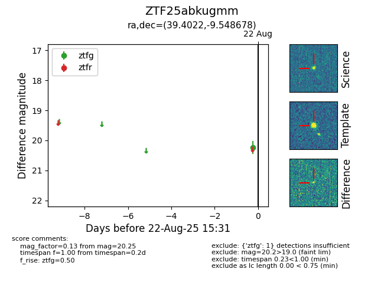

Target ZTF25abkugmm at 2025-08-22 15:31, see:
FINK: fink-portal.org/ZTF25abkugmm
Lasair: lasair-ztf.lsst.ac.uk/objects/ZTF25abkugmm
ALeRCE: alerce.online/object/ZTF25abkugmm
alt names
ZTF25abkugmm (ztf,alerce)
coordinates:
equatorial (ra, dec) = (39.4022,-9.54868)
galactic (l, b) = (182.9111,-59.40595)
photometry
last ztfg=20.25
1 ztfg detections
